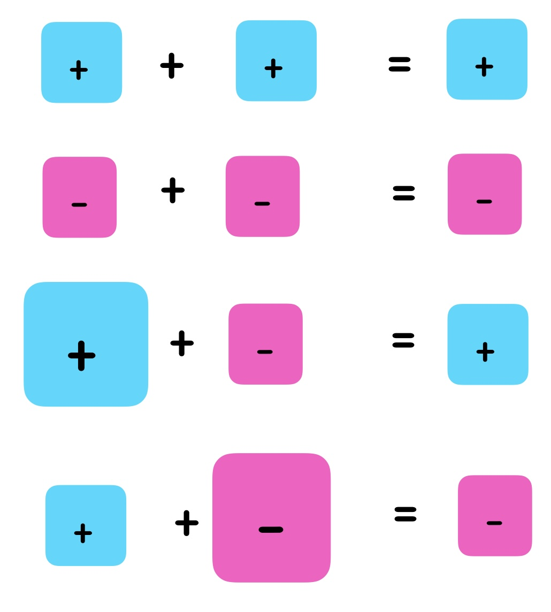
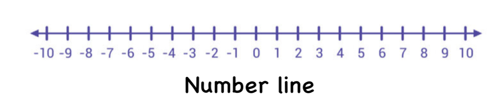
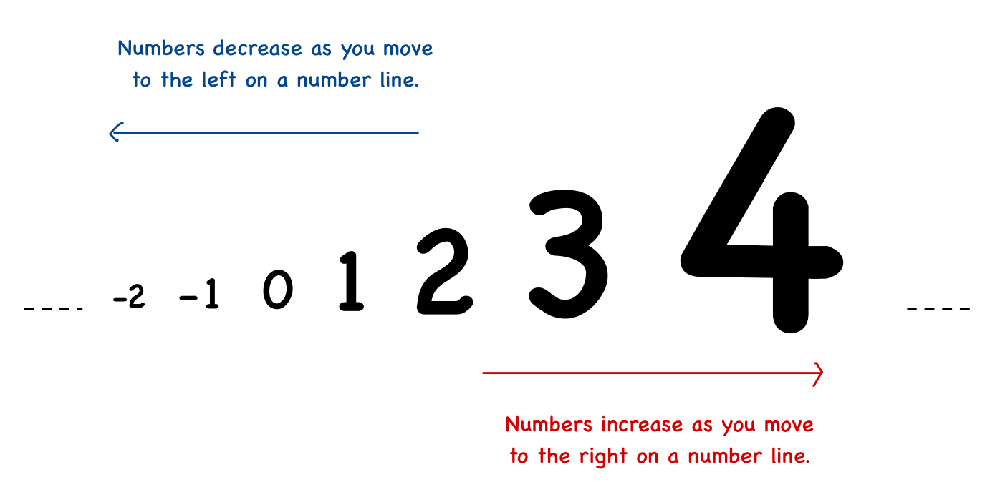
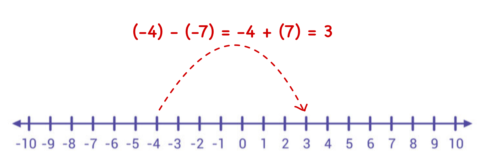

Integers:
Integers expand the world of whole numbers to include negative numbers. They consist of negative numbers (-3, -2, -1), 0, and positive numbers (1, 2, 3, …). Integers help us describe things like temperature changes or debts.
Addition and Subtraction of two Integers
Rules for Addition :
- Same Signs : When adding two integers with the same sign, add their absolute values and keep the common sign.
- Example : (+3) + (+5) = +8
- Example : (-4) + (-6) = -10
- Different Signs : When adding two integers with different signs, subtract the smaller absolute value from the larger absolute value and take the sign of the integer with the larger absolute value.
- Example : (+7) + (-3) = 4
- Example : (-9) + (+6) = -3

Rule for Subtraction : To subtract an integer add its opposite :
a - b = a + (-b) . Now we can use rules of addition to simply.
Note : 1. The absolute value of a number is its distance from zero on the number line, no matter which direction. It is always a positive number or zero.
Example:
- The absolute value of +5 is 5 , because it is 5 steps away from zero
- The absolute value of -5 is also 5 , because it is 5 steps away from zero.
Tip : Think of absolute value as “ignoring the sign” of a number to see how far it is from zero!
2. Opposite of a number : The opposite of a number is the number that is the same distance from zero on the number line but in the opposite direction.
- To find the opposite of a number, just change its sign:
- If the number is positive, its opposite is negative.
- If the number is negative, its opposite is positive.
Example : The opposite of -8 is +8.
Integers on Number Line:
A number line is a straight line with numbers placed at equal intervals. It helps visualize integers and their operations.
Key Points About Integers on a Number Line
- Zero is at the center.
- Positive integers are to the right of zero: +1, +2, +3, ....
- Negative integers are to the left of zero: -1, -2, -3, ....
- As we move to the right on a number line, the numbers increase, and as we move to the left, the numbers decrease.


Addition and Subtraction on Number Line
The number line is a visual tool that helps in understanding addition and subtraction of integers.
-
Addition on the Number Line :
- To add a positive integer, move to the right.
- To add a negative integer, move to the left.
- Example: To calculate 4 + 3, start at 4 and move 3 units to the right to reach 7.
-
Subtraction on the Number Line :
- To subtract a positive integer, move to the left.
- To subtract a negative integer, move to the right
- Example: To calculate 6 - 2, start at 6 and move 2 units to the left to reach 4.
